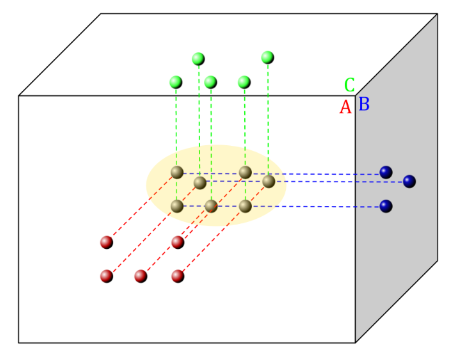
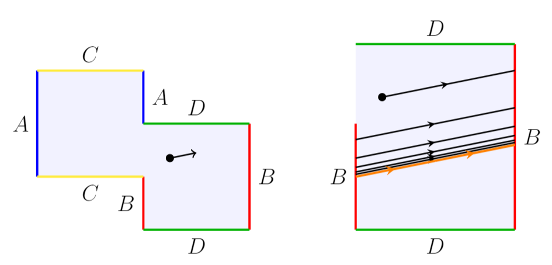

Papers
- Chen, A., Demmel, J., Dinh, G., Haberle, M., Holtz, O. (2021). Communication Bounds for Convolutional Neural Networks. PASC '22}, arXiv:2204.08279 [cs.DC]
- Chowdhary, A., Haberle, M., Ofori-atta, W., Wu, Q. (2023). Weak Diffusive Stability of Roll Solutions at the Zigzag Boundary. Submitted. arXiv:2310.12365 [nlin.PS]
- Haberle, M., Wang, J. (2021). A Full Study of the Dynamics on One-Holed Dilation Tori. Submitted. arXiv:2012.04159 [math.DS]

|

Talk Slides and Recordings
Posters
|